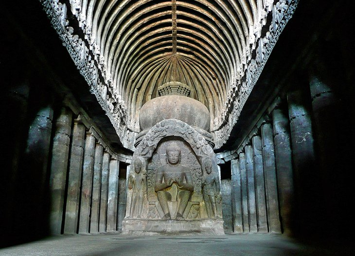

I
ndiaTourism
The Holy City of Varanasi
Dating back to the 8th century BC, Varanasi is one of the oldest still inhabited
cities in the world. A major pilgrimage center for Hindus, this holy city has long been
associated with the mighty Ganges River, one of the faith's most important religious
symbols.
Varanasi offers many reasons to visit, not least of them the chance to explore the Old Ouarter adjacent to the Ganges where you'll find the Kashi Vishwanath Temple, built in 1780. The New Vishwanath Temple with its seven separate temples is also os interest.
Bathing in the Ganges is of great importance to Hindus, and numerous location known as "ghats" feature stairways leading to the water where the faithful bathe before prayers. The largest are Dasashvamedh Ghat and Assi Ghat. The latter, at the confluence of the Ganges and Asi rivers, is considered particularly holy.
Varanasi offers many reasons to visit, not least of them the chance to explore the Old Ouarter adjacent to the Ganges where you'll find the Kashi Vishwanath Temple, built in 1780. The New Vishwanath Temple with its seven separate temples is also os interest.
Bathing in the Ganges is of great importance to Hindus, and numerous location known as "ghats" feature stairways leading to the water where the faithful bathe before prayers. The largest are Dasashvamedh Ghat and Assi Ghat. The latter, at the confluence of the Ganges and Asi rivers, is considered particularly holy.
The Golden City: Jaisalmer
So named for the yellow sandstone used in most of its buildings, the Golden City
of Jaisalmer is an oasis of splendid old architecture that rises from the sand dunes of the
Thar Desert. Once a strategic outpost, today the city is filled with splendid old mansions;
magnificent gateways; and the massive Jaisalmer Fort, also known as the Golden Fort, a
daunting 12th-century structure that rises high above the town.
In addition to its palaces, temples, and fine old homes, the fortress boasts 99 bastions along with massive gates leading to its main courtyard where you'll fing the seven-story-tall Maharaja's Palace. Started in the early 1500s and added to by successive rulers right up until the 19th century, the palace offers sections open to the public, including areas beautifully decorated with tiles fron Italy and China, and intricately carved stone doors.
In addition to its palaces, temples, and fine old homes, the fortress boasts 99 bastions along with massive gates leading to its main courtyard where you'll fing the seven-story-tall Maharaja's Palace. Started in the early 1500s and added to by successive rulers right up until the 19th century, the palace offers sections open to the public, including areas beautifully decorated with tiles fron Italy and China, and intricately carved stone doors.
Mumbai: The Gateway of India

Standing an impressive 26 meters tall and overlooking the Arabian Sea, the
Iconic Gateway of India is a must-see when in Mumbai. Built to commemorate the arrival if
King George V and his wife Queen Mary in 1911, this stunning piece of architecture was
opened with much pomp and ceremony in 1924 and was, for a while, the tallest structure in
the city.
Constructed entirely of yellow basalt and concrete and notable for its Indo-Saracenic design, the Gateway of India was also the scene of a rather less jubilant procession of British soldiers in 1948 when India gained its independence. These days, the huge archway provides a stunning backdrop that is as popular among locals as it is tourists.
Constructed entirely of yellow basalt and concrete and notable for its Indo-Saracenic design, the Gateway of India was also the scene of a rather less jubilant procession of British soldiers in 1948 when India gained its independence. These days, the huge archway provides a stunning backdrop that is as popular among locals as it is tourists.
The Beaches of Goa

Long known within India as the "go-to" destination for those seeking a great
beach holiday, Goa's beautiful western coastline, overlooking the Arabian Sea, has only
recently been discovered by tourists from overseas. Goa's more than 60 miles of coastline is
home to some of the world's loveliest beaches, each with their own particular appeal.
For those looking for peace and quiet, isolated Agonda Beach is a good choice, while Calangute Beach is by far the most commercial amd crowded. For those in search oof posh resorts, yoga gateways, and spa vacations, the beaches of Mandrem, Morjim, and Ashwem are fashionable among wealthy Indians and Westerners alike. Palolem is another one of Goa's popular beaches in a beautiful setting.
While in Goa, be sure to visit the Bhagwan Mahavir Wildlife Sanctuary. This superb attraction is home to thick forests and plenty of fauna, including deer, monkeys, elephants, leopards, tigers, and black panthers, as well as India's famous king cobras, and some 200 species of birds.
Also worth a visit is Divar Island, accessed by ferry from Old Goa. Highlights include Piedade, a typical Goan village and home to the Church of Our Lady of Compassion with its interesting stucco work, Baroque plaster decorations, and altars, as well as stunning views of the surrounding countryside.
For those looking for peace and quiet, isolated Agonda Beach is a good choice, while Calangute Beach is by far the most commercial amd crowded. For those in search oof posh resorts, yoga gateways, and spa vacations, the beaches of Mandrem, Morjim, and Ashwem are fashionable among wealthy Indians and Westerners alike. Palolem is another one of Goa's popular beaches in a beautiful setting.
While in Goa, be sure to visit the Bhagwan Mahavir Wildlife Sanctuary. This superb attraction is home to thick forests and plenty of fauna, including deer, monkeys, elephants, leopards, tigers, and black panthers, as well as India's famous king cobras, and some 200 species of birds.
Also worth a visit is Divar Island, accessed by ferry from Old Goa. Highlights include Piedade, a typical Goan village and home to the Church of Our Lady of Compassion with its interesting stucco work, Baroque plaster decorations, and altars, as well as stunning views of the surrounding countryside.
The Ellora Caves, Aurangabad

The famous monumental Ellora Caves were built between the 5th and 10th centuries
by Buddhist, Jain, and Hindu monks, and make for an excellent excursion from Mumbai, some
300 kilometers to the west.
Now a UNESCO World Heritage Site, this remarkable collection of 34 carved monasteries, chapels, and temples – 12 of them Buddhist, 17 Hindu, and five belonging to the Jain faith – were built in close proximity to each other, a reflection of the religious tolerance that existed during this period of Indian history.
Of the Buddhist monastery caves, highlights include a number of shrines featuring carvings of Buddha and saints dating from the 5th to 7th centuries, as well as the stunning Carpenter's Cave, considered one of the finest in India.
The Hindu caves are much more complex and were carved from the top down, so scaffolding was not necessary. Of these, the best is the Kailasa Temple, an enormous rock-cut temple representing Mount Kailasa and requiring the removal of 200,000 tons of rock.
Now a UNESCO World Heritage Site, this remarkable collection of 34 carved monasteries, chapels, and temples – 12 of them Buddhist, 17 Hindu, and five belonging to the Jain faith – were built in close proximity to each other, a reflection of the religious tolerance that existed during this period of Indian history.
Of the Buddhist monastery caves, highlights include a number of shrines featuring carvings of Buddha and saints dating from the 5th to 7th centuries, as well as the stunning Carpenter's Cave, considered one of the finest in India.
The Hindu caves are much more complex and were carved from the top down, so scaffolding was not necessary. Of these, the best is the Kailasa Temple, an enormous rock-cut temple representing Mount Kailasa and requiring the removal of 200,000 tons of rock.
Mehrangarh Fort, Jodhpur

Dominating the old city of Jodhpur, the massive Mehrangarh Fort, one of the
largest fortifications in India, was built in the 15th century to safeguard the people of
the famous "Blue City." Jodhpur is still known by this name, which is derived from its
indigo-colored houses, painted blue to deflect the heat.
Built on top of a towering outcrop, Mehrangarh is an amazing feat of construction, its massive walls all but impenetrable. Access is via one of seven splendid gates, including Jaya Pol and Fateh Pol (the latter still bears scars from cannon attacks).
Highlights of a visit include exploring the fort's fascinating network of courtyards and palaces, as well as a museum housing a splendid collection of artifacts related to the Maharajas. Be sure to spend time in the historic center of Jodhpur itself, famous for its eight city gates, a lovely old clock tower, and numerous bazaars selling everything from vegetables to sweets, spices, and handicrafts.
Built on top of a towering outcrop, Mehrangarh is an amazing feat of construction, its massive walls all but impenetrable. Access is via one of seven splendid gates, including Jaya Pol and Fateh Pol (the latter still bears scars from cannon attacks).
Highlights of a visit include exploring the fort's fascinating network of courtyards and palaces, as well as a museum housing a splendid collection of artifacts related to the Maharajas. Be sure to spend time in the historic center of Jodhpur itself, famous for its eight city gates, a lovely old clock tower, and numerous bazaars selling everything from vegetables to sweets, spices, and handicrafts.
The Ganges River

The Ganges River, or "Ganga" after the Hindu goddess, has long been one of
India's most revered natural wonders. It's also one of the country's leading attractions,
drawing crowds of Indian nationals to partake in its religious ceremonies, as well as
tourists to enjoy the splendor of this mighty river.
While there are a number of cities dotted along the river, it's to the city of Varanasi that most tourists will travel to experience the Ganges and the cultural attractions that have sprung up along its banks. Although relatively small by Indian standards – its population is around 1.2 million people – the city is chock-full of temples and other important religious sites, many of them focused on worship of (or on) the Ganges.
Numerous "ghats" are set along the river banks, making it easy for worshippers and tourists alike to get up close. Made up of sometimes steep steps leading directly into the water, there are in fact 88 of these entry points to the Ganges. While most are many centuries old, they were extensively reconstructed and improved in the 1700s, and with their often vibrant, colorful ceremonies and celebrations are some of the most beautiful places to photograph in India.
If you've time, opt for one of the Ganges river tours available in the city from any one of the ghats. The most memorable are the early morning sunrise cruises. Top the experience by purchasing one of the small, floating offerings available from a vendor and set it off down the river (camera at the ready, of course).
While there are a number of cities dotted along the river, it's to the city of Varanasi that most tourists will travel to experience the Ganges and the cultural attractions that have sprung up along its banks. Although relatively small by Indian standards – its population is around 1.2 million people – the city is chock-full of temples and other important religious sites, many of them focused on worship of (or on) the Ganges.
Numerous "ghats" are set along the river banks, making it easy for worshippers and tourists alike to get up close. Made up of sometimes steep steps leading directly into the water, there are in fact 88 of these entry points to the Ganges. While most are many centuries old, they were extensively reconstructed and improved in the 1700s, and with their often vibrant, colorful ceremonies and celebrations are some of the most beautiful places to photograph in India.
If you've time, opt for one of the Ganges river tours available in the city from any one of the ghats. The most memorable are the early morning sunrise cruises. Top the experience by purchasing one of the small, floating offerings available from a vendor and set it off down the river (camera at the ready, of course).
The Mysore Palace

The sprawling city of Mysore is a delight to explore thanks to its eclectic mix
of fine old colonial architecture; regal Indian palaces; and lush, well-manicured gardens.
While those inclined towards shopping will enjoy spending time in the city's famous silk and
sandalwood bazaars, the main attraction is magnificent Mysore Palace.
Completely rebuilt in 1897 after a devastating fire, this beautiful three-storied palace features highlights such as its elegant square towers and domes; the many ornate ceilings and pillars in Durbar Hall; and the splendid Marriage Pavilion, with its glazed floor tiles, stunning stained glass, artworks, and displays of jewelry. It's also where, on special occasions, the exquisite Golden Throne is exhibited.
For a real treat, be sure to catch one of the splendid light displays held each Sunday and during holidays, when the palace is illuminated by more than 90,000 lights. A fun way to explore the palace's massive grounds and gardens is as part of a cycle tour, available free once inside.
Completely rebuilt in 1897 after a devastating fire, this beautiful three-storied palace features highlights such as its elegant square towers and domes; the many ornate ceilings and pillars in Durbar Hall; and the splendid Marriage Pavilion, with its glazed floor tiles, stunning stained glass, artworks, and displays of jewelry. It's also where, on special occasions, the exquisite Golden Throne is exhibited.
For a real treat, be sure to catch one of the splendid light displays held each Sunday and during holidays, when the palace is illuminated by more than 90,000 lights. A fun way to explore the palace's massive grounds and gardens is as part of a cycle tour, available free once inside.
Mahabodhi Temple, Bodhgaya

Bodhgaya, considered the world's holiest Buddhist site, attracts thousands of
visitors each year, all drawn to participate with the resident monks in meditation and
prayer.
The focal point of this place of pilgrimage is stunning Mahabodhi Temple, built next to the very spot where Buddha came to Enlightenment and formulated his philosophy on life. Constructed in the 6th century and restored numerous times since, the temple is topped with a beautiful pyramidal spire and houses a large gilded statue of Buddha.
Also of interest is the site's pipal tree, a descendant of the original bodhi tree where Buddha meditated for seven days after the Enlightenment, said to be among the oldest and most venerated trees in the world (you'll know you've found it when you spot the red sandstone slab marking the spot).
The focal point of this place of pilgrimage is stunning Mahabodhi Temple, built next to the very spot where Buddha came to Enlightenment and formulated his philosophy on life. Constructed in the 6th century and restored numerous times since, the temple is topped with a beautiful pyramidal spire and houses a large gilded statue of Buddha.
Also of interest is the site's pipal tree, a descendant of the original bodhi tree where Buddha meditated for seven days after the Enlightenment, said to be among the oldest and most venerated trees in the world (you'll know you've found it when you spot the red sandstone slab marking the spot).
2022Indiatourism.com Pvt.Ltd
I
ndiaTourism